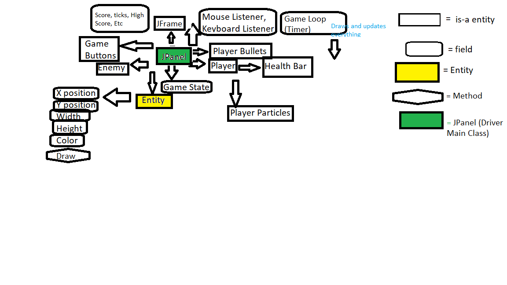

Remember Asteriods? Kablip is like that but better, easier to control, and more fun! It comes with colors, better interface, 8-bit sounds, Consolas Font, and more!
Future developments include upgrades, more animations, levels, power ups, and possibly better graphics.
Longer Description
“KaBlip” is a 2D point-and-click retro-styled game. The game is made for people to enjoy especially those who find the simple graphics and sounds nostalgic. The player controls the green canon in the middle by pointing their mouse at the enemy represented by the dark blue square and clicking to shoot at them. If the enemies touch you, you will die (or lose health points if there is enough time). Over time, enemies will split into smaller pieces once they die and will spawn more frequently as the game progresses. The object of the game is to live as long as possible and get the highest score. The more enemies that are killed and the longer you survive, the higher the score becomes. The concept of shooting at enemies with a mouse through a canon is similar to the multiplayer game, https://diep.io. It’s also very similar to the Asteroids where the larger asteroids become smaller after being shot at from the space ship. When the space ship explodes when you lose the game, it is similar to Undertale when the heart explodes after losing all hp.
Design of Program
New UML Diagram

Arrows represent "has a" relationships.
The game uses Java Swing to display everything. An instance of the JPanel controls the game and is displayed inside the JFrame. A timer runs every 100th of a second to display and update the game inside of the JPanel.
Special Features
The controls are simple
Different screen sizes don't give advantages in game
Almost everything in the game is set to some preportion of the screen which makes it playable on different screen sizes.
Fullscreen
Highscore
Comes with instructions in game
Colors contrast well
It's helpful if you're colorblind.
Way easier to see what's going on
Has sound
It can relieve your stress (if you don't take it to seriously)
Demo
Try it out for yourself here or by clicking on the green flag: